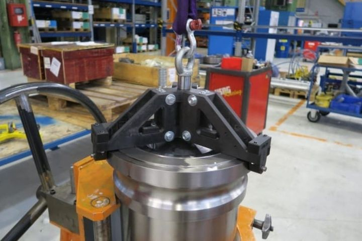

官方客戶案例
真實導入的成果數字

Vestas｜Go/No-Go 檢具與校驗治具的 FOD 異物防呆（高辨識度 Onyx GF＋AI 機器視覺）
- 模具停機每小時約損失 7,000 美元產值
- 單次工具遺留事故若需全天修補，單一廠區損失可達 168,000 美元以上

Energy
能源設備通常維修成本高、停機損失大，且現場需求具有時間壓力。Markforged 可協助能源、石化、電力與重工場景快速補齊工裝、治具與備件。
產業背景
能源場域常有高溫、長交期與現場不可久停的壓力。只要有一部分輔助件、治具與特定備件能更快就位，就能顯著降低等待與停機風險。
推薦切入
適合高溫工程材料與大型工裝。
以 17-4PH、316L 或 H13 在廠內製作部分金屬備件與工業零件。
讓常用維修夾具與備件可跨場域重複製造。
導入價值
降低停機等待與維修延遲。
減少少量備件的採購與庫存壓力。
提高現場維修與改善彈性。
官方客戶案例
